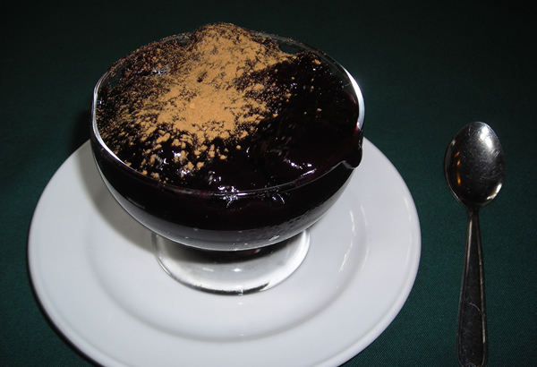
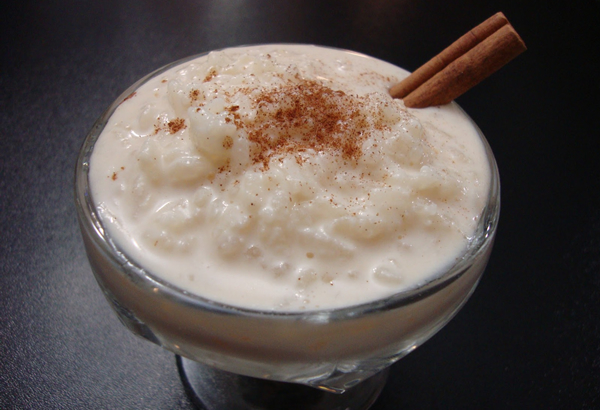
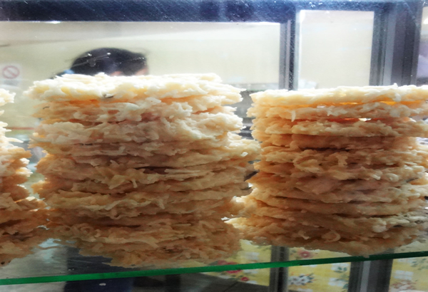
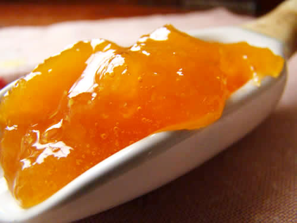
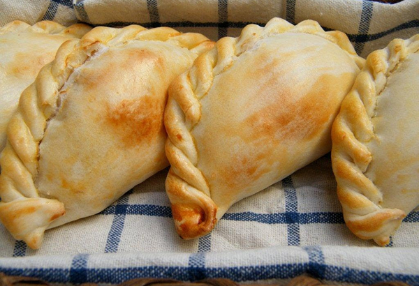
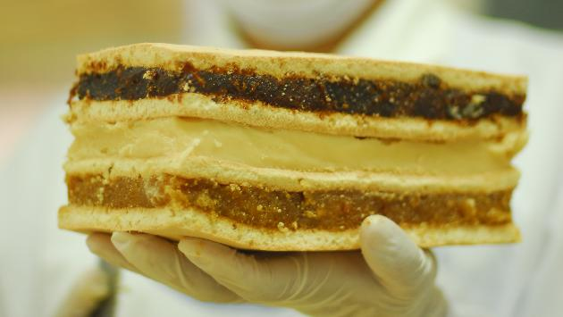

Common Sweet Treats of Chiclayo
| Mazamorra |
| A thickened liquid made from boiled purple corn, pineapple, and cloves topped off with a touch of cinnamon. Mazamorra was eaten by the Quechua people in pre-Hispanic times and is typically served warm. |

| Arroz con Leche |
| Rice pudding typically served with cinnamon and plump raisins, Arroz con Leche also goes well served with Mazamorra. |

| Cocadas |
| A dessert for the sweet tooth, these rich coconut cookies are popular at many sweet shops in Peru. |

| Dulce de higo, durazno, mango ciruelo, mamey, papaya |
| These dulces are fruit covered in syrup to give them a sweeter flavor. |

| Empanada de Globo |
| A crisp, thin bread with a hollow inside covered in sugar, these empanadas are a quick treat at many bakeries. |

| King Kong Lambayecana |
| Originating from Lambayeque, these rectangular cookies can be found in many specialty King Kong shops in the region. The thick cookie consists of layers of a caramel-milk spread, and optional layers of jam-like fruit. These treats are the pride and joy of the local people and can be found in many stores around Chiclayo. |
